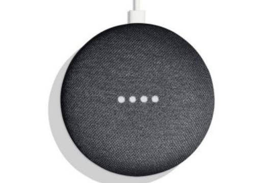

The Google Home Mini is an assistant meant to provide services to the user.
The smart home assistant uses microphone to listen to the user’s query, afterwards uses the cloud service on their platform to then process the query, and finally outputs the result via the speaker.
The Google Home Mini was released in 2017 and the price is £24 on BT Shop as of 20th of March 2021.
The Amazon Echo Dot has a flat cylinder shape with mesh grilled outer casing.
It also has a light up ring which is to show interactivity and 4 textile buttons which include volume control and microphone control.
The Google Home Mini uses micro usb cable to power on and both needs to connect to Wi-Fi to functions.
The device allows other smart IoT devices such as smart lighting and smart camera to be connected to them.
This means that the user can interact with the assistance which will then interact with other IoT device.
The assistance can also interact with other 3rd party services and API such as Spotify and Weather services which allows more functionalities and interaction from the assistance.
There are many information which were found from this project, some which include:
- Device Data: Device Attributes, Device Feature, System Software and Security Versions, Network Connectivity & Performance, Recent Successful Android Device Configuration Service Connections, Recent Failed Android Device Configuration Service Connections
- Chome: Autofill, Bookmarks, Browser History, Dictionary, Extensions, Search Engines, Sync Settings
- Google Account: Google Subsciber Information, Account Recovery Information, IP Activity
- Google Home: User Information, Room Information, Device Information, State, Usage Information, Usage History, 3rd Party App Integration
- Maps: Commute routes, Commute settings, My labeled places, Photos Contribution, Starred Places, Place Reviews